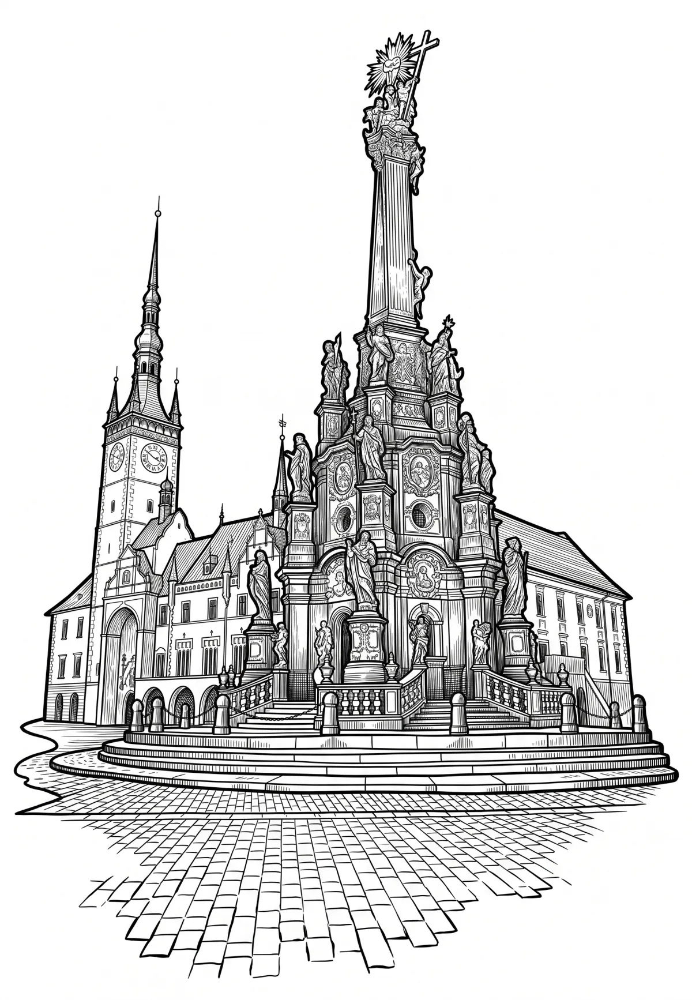

Olomouc
Olomouc (rod ženský, v místním úzu i mužský, hanácky Olomóc nebo Holomóc; německy Olmütz) je statutární a univerzitní město v okrese Olomouc, šesté nejlidnatější město v Česku (třetí na Moravě). Jedná se o krajské město Olomouckého kraje a jedno z bývalých hlavních měst Moravy. Ve městě o rozloze 10 336 hektarů žije přibližně 103 tisíc obyvatel. Jedná se o největší město na řece Moravě.
Více na Wikipedii